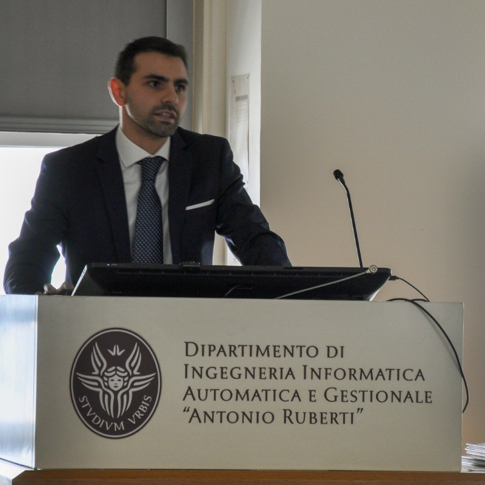

Simone Rotondi
Robotics researcher at Inria and co-founder of Localyte. Previously GNSS R&D at Thales Alenia Space.
Research: in the Rainbow team at Inria Rennes, I study how robots can control the shape of deformable objects when their models are imperfect.
Localyte: I build software that reduces IMU drift, so drones, robots, vehicles and satellites keep navigating when GNSS or other external references fail.

Research
Shape control under model uncertainty
Deformable objects change shape as a robot manipulates them. My PhD investigates how visual feedback can guide this process while accounting for uncertainty in the model of the object.
The aim is to make shape control more robust when the real object behaves differently from its model.
Closed-loop shape control
Supervised by Paolo Robuffo Giordano, Alexandre Krupa, and Tommaso Belvedere. PhD started in November 2025.
Publications on Semantic Scholar →
Research profile at Inria →
Background
I work at the intersection of control theory, robotics and navigation, with a focus on making physical systems reliable despite imperfect models and measurements. Based in Rennes, France.
-
PhD researcher · Inria Rennes, Rainbow team
– present
Visual shape control of deformable objects under model uncertainty.
-
Co-founder · Localyte
– present
AI-enhanced inertial sensing for navigation when GNSS and other external references fail.
-
System Engineer · Thales Alenia Space, Advanced Projects
– · Rome
Precise localization on Earth and Moon: GNSS R&D including the Galileo High Accuracy Service (HAS) and Moonlight, plus GNSS radio-occultation work for atmospheric estimation and weather forecasting.
-
Control Engineer · CRAT, with Thales Alenia Space
– · Rome
High Accuracy Service for the Galileo satellite system, with the Thales Alenia Space R&D team.
Selected work
-
Colored Ball Balancing (NIKE)
A hands-on PID demonstrator where a colored ball makes feedback control visible. Used with students and at Open Days to connect tuning choices with real physical behavior.
-
3LinerLeaderLess (Multiple Shooting)
Optimization and trajectory design work with an emphasis on practical reproducibility.
-
WIP-ARMS / ILQR-GNMS
Nonlinear optimal control experiments with iterative Gauss-Newton shooting methods, MATLAB simulations, and Julia visualizations for inverted-pendulum systems.
Now
Updated
-
Research at Inria
Working on visual shape control of deformable objects under model uncertainty in the Rainbow team.
-
Building Localyte
Developing software for inertial sensing and navigation. More about Localyte →
-
brAIns 2026
BrainJuice’s event on neuroscience and AI takes place on 30 October at Sapienza Università di Roma. Event details and registration →
Contact
Research and academic collaboration:
simone.rotondi@inria.fr
Localyte, industry and partnerships:
simone.rotondi@localyte.tech
INRIA: Research Profile
Publications: Semantic Scholar
GitHub: @spbisc97
LinkedIn: simone-rotondi